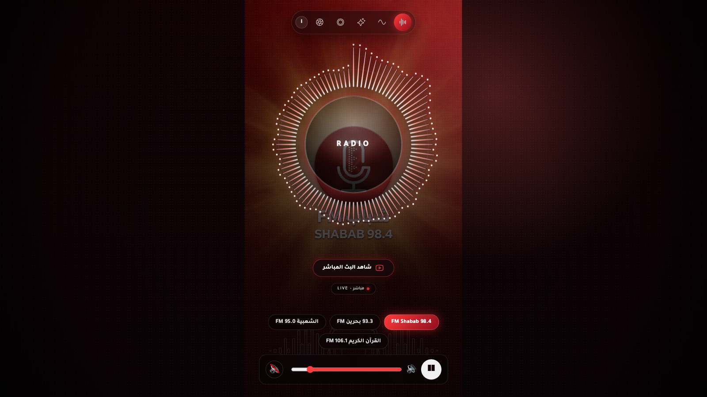
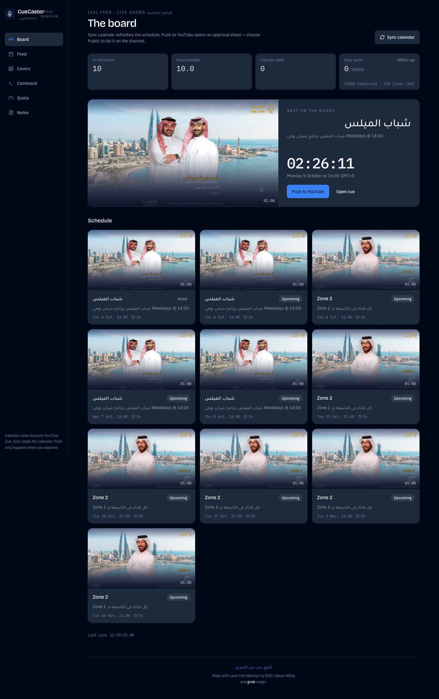
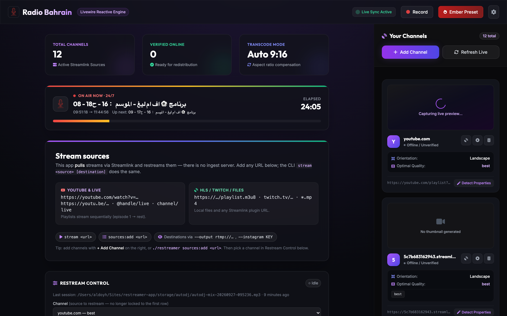
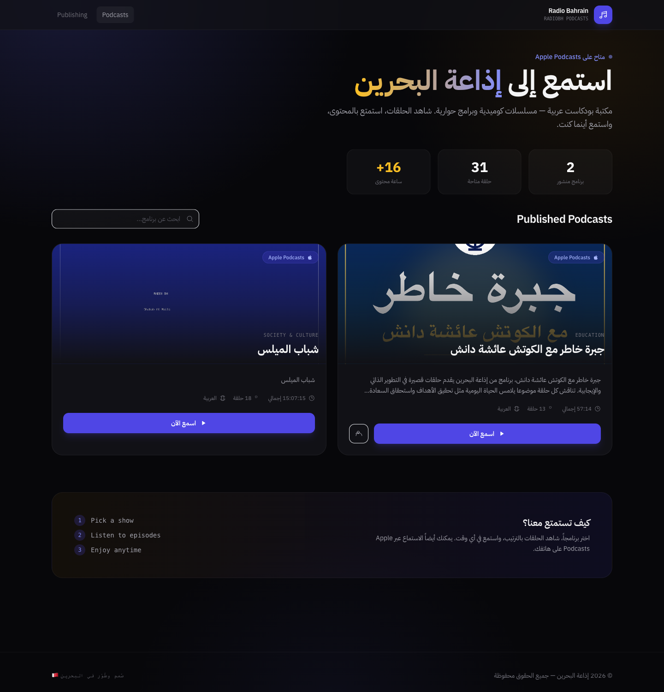
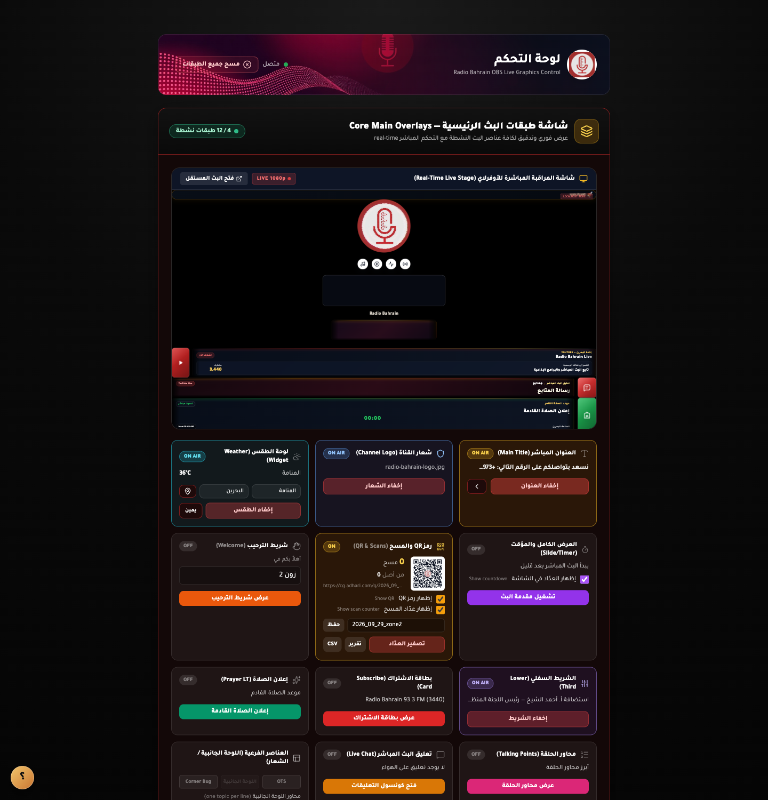

١. الأداء التشغيلي ونمو القنوات الرقمية (سبتمبر ٢٠٢٦)
خلال الدورة التشغيلية لشهر سبتمبر 2026، حققت إذاعة البحرين نسبة استقرار بلغت 100% دون أي انقطاع في كافة جلسات الراديو المرئي ونقاط الإرسال الشبكي. وأطلقت غرفة التحكم دورة برامجية مرئية موسعة قادها البرنامج اليومي شباب الميلس من استوديو 1، والاستوديو التحليلي الرياضي برنامج اف ام ليغ، وبرامج المحركات DRS و Zone 2، والبرنامج التكتيكي خارج المستطيل الأخضر، بالتزامن مع فك واستعادة وحدة الإرسال المخصصة من مدينة الشباب 2030.
أنجزت الهندسة منظومتين سياديتين: الإطلاق الشامل لمشغل الإذاعات الأربع الموحد عبر النطاق السيادي (bh.here.now)، وتشغيل محرك Cue Caster لأتمتة مزامنة جدول تقويم Google مع YouTube Live الذي جدول بنجاح 63 فعالية بث لعام 2026. وتتواصل كافة الاعتمادات التشغيلية بإشراف منسق البث ورئيس الفريق عبدالله الشوملي.
٢. الإنجاز الرقمي السيادي: إطلاق مشغل الإذاعات الموحد (bh.here.now)
أطلقت إذاعة البحرين رسمياً مشغلها الرقمي السيادي المطور ذاتياً عبر النطاق الوطني bh.here.now. يمثل المشروع بنية متطورة توحد المحطات الوطنية الأربع في واجهة سريعة وخالية من التأخير تعمل عبر الهواتف والحواسيب دون الحاجة لوساطة متاجر التطبيقات:
٤ إذاعات في منصة واحدة
تنقل فوري بلمسة واحدة بين 93.3 بحرين FM، FM Shabab 98.4، القرآن الكريم FM 106.1، والشعبية 95.0 FM دون أي تقطيع.
محرك HLS فائق النقاوة
بث رقمي بجودة 192 ك.بت/ثانية بمعيار AAC مع مصور تردد دائري ديناميكي واستعادة لحظية للبث عند تقلب الشبكة.
دعم شاشات القفل الذكية
تكامل تام مع بروتوكول MediaSession للتحكم بالصوت وعرض اسم المحطة والمقطوعة والتبديل من شاشات قفل iOS و Android.



٣. محركات الأتمتة والأنظمة التشغيلية المعتمدة
توليد غرف انتظار البث المباشر والعناوين وأوصاف الحلقات وبيانات الضيوف آلياً من جدول غرفة التحكم الرئيسية (MCR) دون تدخل بشري، مما قضى على أخطاء التأخير والجدولة اليدوية.
محرك محلي لتوزيع تدفق البث المتزامن بتكلفة منعدمة ($0)، أتاح الاستغناء التام عن المنصات السحابية التجارية المكلفة (مثل Restream.io بتكلفة تفوق $250 شهرياً) مع استغلال السعة القصوى لشبكة المقر.
استخراج الصوت آلياً عقب انتهاء البث المرئي، وتطبيق المعايرة الصوتية الدقيقة بمعيار -16 LUFS، والتغذية الفورية لمنصة Apple Podcasts خلال دقائق معدودة من انتهاء البث الأثيري.
لوحة تحكم مرنة عبر المتصفح والهاتف لإطلاق أسماء الضيوف وعناوين الحلقات والأخبار العاجلة، مع ربط أزرار جهاز الخلط RØDECaster في الاستوديو لإطلاق الرسوم التوضيحية آلياً أثناء الحوار.




٤. الملحق التشغيلي الشامل: جدول البثوث المباشرة وتوقيتاتها الدقيقة (سبتمبر ٢٠٢٦)
يوثق الجدول التالي كافة عمليات البث المباشر المنفذة عبر القناة الرسمية لـ إذاعة البحرين (`@Radio-Bahrain`) خلال شهر سبتمبر 2026 كاملةً، متضمناً التاريخ الميلادي، عنوان البث الدقيق، توقيت الهواء الرسمي، المدة الزمنية، والمشاهدات الموثقة:
| التاريخ | البرنامج / عنوان البث المباشر | توقيت البث (توقيت البحرين) | المدة | المشاهدات | الحالة التشغيلية والملاحظات الهندسية |
|---|---|---|---|---|---|
| 2026-09-01 | أستوديو الشباب — مدينة الشباب 2030 (ح 20) | 11:00 AM | 1:06:06 | 89 | بث ميداني خارجي عبر جهاز التشفير المخصص؛ عزل شبكة المقر. |
| 2026-09-01 | شباب الميلس - الأولى (التدشين الرسمي) | 2:00 PM – 3:00 PM | 52:35 | 203 | انطلاق الدورة البرامجية المرئية اليومية من استوديو 1. |
| 2026-09-02 | أستوديو الشباب — مدينة الشباب 2030 (ح 21) | 11:00 AM | 1:05:19 | 78 | نقل صوتي ومرئي نقي لغرفة التحكم الرئيسية دون تأخير. |
| 2026-09-02 | شباب الميلس - ح 2 | 2:00 PM – 3:00 PM | 47:59 | 156 | جلسة الراديو المرئي الثانية؛ اختبار توازن ميكروفونات المذيعين. |
| 2026-09-02 | البرنامج المباشر 🏎️ Zone 2 | 8:00 PM – 9:00 PM | 59:41 | 419 | تحليل سباقات المحركات؛ مزامنة الصوت مع خط إرسال 93.3 FM. |
| 2026-09-03 | أستوديو الشباب — حلقة الختام 22 (مدينة الشباب 2030) | 11:00 AM | 1:11:06 | 91 | ختام التغطية الميدانية؛ فك جهاز البث وإعادته لمقر الإذاعة. |
| 2026-09-03 | شباب الميلس - ح 3 | 2:00 PM – 3:00 PM | 38:59 | 98 | متابعة بث الدورة البرامجية وتدشين الخطوط التفاعلية. |
| 2026-09-05 | برنامج اف ام ليغ - ح 1 (انطلاق الموسم الرياضي) | 7:00 PM – 8:45 PM | 1:45:07 | 610 | افتتاح الاستوديو التحليلي؛ جدولة البث عبر محرك Cue Caster. |
| 2026-09-06 | شباب الميلس - ح 4 | 2:00 PM – 3:00 PM | 50:32 | 237 | استمرارية البث اليومي بدقة 1080p إلى غرفة التحكم الرئيسية. |
| 2026-09-07 | شباب الميلس - ح 5 | 2:00 PM – 3:00 PM | 49:55 | 219 | بث مرئي متزامن؛ تفعيل شريط أسماء المحاورين تلقائياً. |
| 2026-09-07 | خارج المستطيل ⚽️ الأخضر (حلقة التدشين الأولى) | 4:00 PM – 5:25 PM | 1:21:32 | 326 | تدشين استوديو التحليل التكتيكي الكروي بنقاء رقمي عالي. |
| 2026-09-07 | البرنامج المباشر 🏎️ DRS | 8:00 PM – 9:00 PM | 1:01:58 | 189 | تغطية مستجدات الفورمولا 1؛ استقرار خوادم البث المباشر. |
| 2026-09-08 | شباب الميلس - ح 6 | 2:00 PM – 3:00 PM | 52:37 | 232 | بث مباشر من استوديو 1 دون أي فقد في حزم البيانات. |
| 2026-09-08 | البرنامج المباشر Zone 2 - ٨ سبتمبر ٢٠٢٦ | 8:00 PM – 9:00 PM | 1:03:20 | 368 | بث موثق؛ إعادة التوزيع الرقمي عبر محرك التوزيع المتعدد الداخلي. |
| 2026-09-12 | شباب الميلس - ح 7 | 2:00 PM – 3:00 PM | 50:49 | 206 | معايرة دقيقة لطبقات الصوت وعزل الضوضاء من مصفوفة RØDECaster. |
| 2026-09-13 | شباب الميلس - ح 8 مع الفنان حسن محمد | 2:00 PM – 3:25 PM | 1:22:48 | 434 | أعلى حلقات الحوار متابعة؛ تفعيل شريط الضيف الفوري دون تقطيع. |
| 2026-09-13 | برنامج اف ام ليغ - ح 2 (الاستوديو التحليلي) | 7:00 PM – 8:50 PM | 1:51:49 | 718 | قمة المتابعة الرياضية؛ ثبات خط الإرسال وتصدير ماستر البودكاست. |
| 2026-09-14 | شباب الميلس - ح 9 | 2:00 PM – 3:00 PM | 50:07 | 200 | نقاشات شبابية مباشرة وتغطية متزامنة على خط إذاعة 93.3 FM. |
| 2026-09-15 | شباب الميلس - ح 10 | 2:00 PM – 3:00 PM | 48:12 | 165 | بث الراديو المرئي اليومي مع مزامنة جدول الحلقات عبر Cue Caster. |
| 2026-09-15 | خارج المستطيل ⚽️ الأخضر - ح 3 | 4:00 PM – 5:25 PM | 1:24:30 | 489 | التحليل التكتيكي الكروي؛ معايرة الصوت الماستر بمعيار -16 LUFS. |
| 2026-09-15 | البرنامج المباشر 🏎️ DRS | 8:00 PM – 9:00 PM | 1:02:09 | 283 | استوديو الراديو المرئي المباشر؛ صفر هبوط في حزم البيانات لليوتيوب. |
| 2026-09-16 | شباب الميلس - ح 11 | 2:00 PM – 3:00 PM | 52:38 | 213 | نقاء واستقرار عالي لبث استوديو 1 مع تكامل الأرشفة الرقمية. |
| 2026-09-16 | البرنامج المباشر Zone 2 | 8:00 PM – 9:00 PM | 55:00 | 201 | متابعة وتحليل جولات السباقات؛ ثبات تام لتدفق البث الرقمي. |
| 2026-09-17 | شباب الميلس - ح 12 | 2:00 PM – 3:00 PM | 48:38 | 239 | التبديل بين كاميرات الاستوديو واختبار أوامر بروتوكول OBS WebSocket. |
| 2026-09-18 | شباب الميلس - ح 13 | 2:00 PM – 3:00 PM | 53:59 | 369 | برنامج المساء الحواري اليومي؛ تكامل مسار HLS مع مشغل bh.here.now. |
| 2026-09-19 | برنامج اف ام ليغ - ح 3 | 7:00 PM – 8:55 PM | 1:53:46 | 606 | بث مرئي متكامل وتفعيل شريط النتائج عبر نظام التراكب الرسومي. |
| 2026-09-21 | شباب الميلس - ح 14 | 2:00 PM – 3:00 PM | 50:12 | 174 | استوديو البث التفاعلي المباشر مع استقرار تام للمخرجات الرقمية. |
| 2026-09-22 | شباب الميلس - ح 15 | 2:00 PM – 3:00 PM | 49:25 | 210 | حلقة تفاعلية مباشرة مع الاتصالات الخارجية وتوزيع الصوت. |
| 2026-09-22 | DRS مع يونس العيد | 8:00 PM – 9:00 PM | 59:40 | 113 | لقاء حواري مع ضيف؛ إطلاق شريط التعريف تلقائياً عبر نظام التراكب. |
| 2026-09-23 | شباب الميلس - ح 16 | 2:00 PM – 3:00 PM | 47:37 | 41 | بث حي مباشر؛ استقرار الإرسال وأرشفة الماستر بجودة 1080p. |
| 2026-09-23 | البرنامج المباشر Zone 2 - ح 5 | 8:00 PM – 9:00 PM | 58:40 | 239 | مداخلات وتفاعل مباشر مع المتابعين وعزل الصوت عبر RØDECaster. |
| 2026-09-24 | شباب الميلس - ح 17 | 2:00 PM – 2:45 PM | 44:32 | 252 | البث المرئي من استوديو 1؛ معالجة الصوت الماستر آلياً لبودكاست أبل. |
| 2026-09-24 | استديو 27 - كأس الخليج 27 - ح 1 | 4:00 PM – 4:50 PM | 47:50 | 274 | تغطية كأس الخليج. تم إيقاف وإلغاء البرنامج لاحقاً في 28 سبتمبر. |
| 2026-09-30 | شباب الميلس - ح 18 (ختام دورة سبتمبر) | 2:00 PM – 3:00 PM | 51:14 | 188 | حلقة ختام الدورة الشهرية وتوثيق أرشيف البث في سجلات الإذاعة. |
٥. أولويات العمل وخطة الشهر القادم (أكتوبر ٢٠٢٦)
تشغيل مسار معالجة في محرك التوزيع المتعدد لاقتطاع الكادر الرأسي تلقائياً لبث جلسات الراديو المرئي تزامناً مع يوتيوب.
تفعيل التخزين المؤقت دون اتصال ودعم MediaSession لتسهيل تبديل القنوات الأربع مباشرة من شاشات الهواتف المغلقة.
ربط مواعيد البرامج المتكررة لإنشاء غرف الانتظار وتحديث بيانات الضيوف تلقائياً قبل 4 ساعات من موعد الهواء.